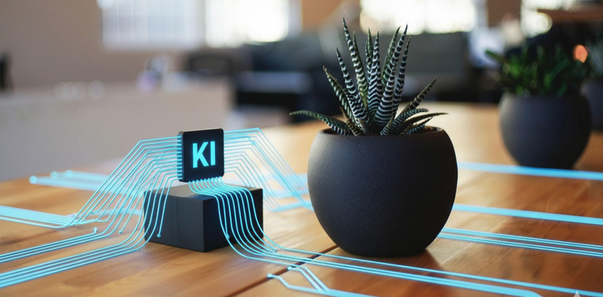
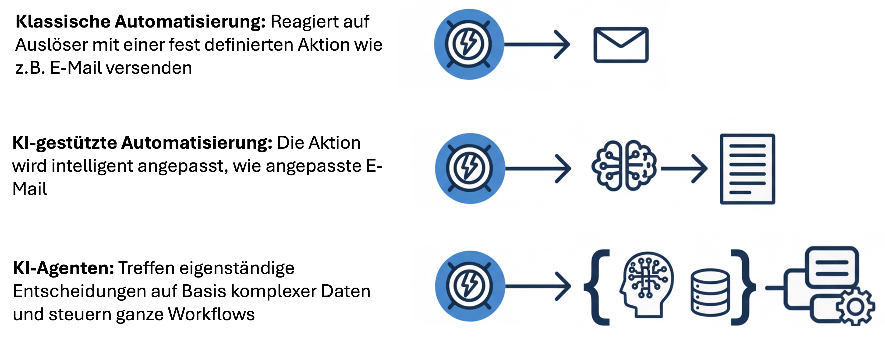
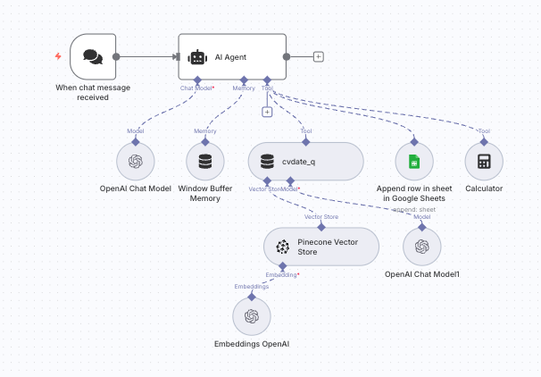

From classic process automation to autonomous AI agents – we implement scalable solutions that make your business more efficient.
Workflow automation means the digitalisation and automation of recurring business processes. Instead of performing manual tasks repeatedly by hand, intelligent systems take over this work – reliably, error-free and around the clock.
With modern low-code platforms like n8n and Make.com, workflows can be designed visually – without deep programming knowledge. This makes automation accessible for companies of any size.

Automation evolves – from simple rules to autonomous decisions.
Predefined responses to specific triggers. Suitable for rule-based, repetitive processes with clear if-then logic.
Intelligent adaptation of actions based on context – e.g. personalised content creation or dynamic decisions.
Autonomous decision-making based on complex data. Agents plan, prioritise and act independently within defined parameters.
Eliminate routine tasks – gain strategic focus.
Conserve resources through automated, scalable processes.
Consistent quality through rule-based execution.
Enable growth without proportional headcount increases.
More motivation through demanding, value-adding work.
Processes run without interruption – even outside business hours.
An example of AI-powered automation: an intelligent chatbot that understands documents, responds contextually and logs conversations – fully automated.
